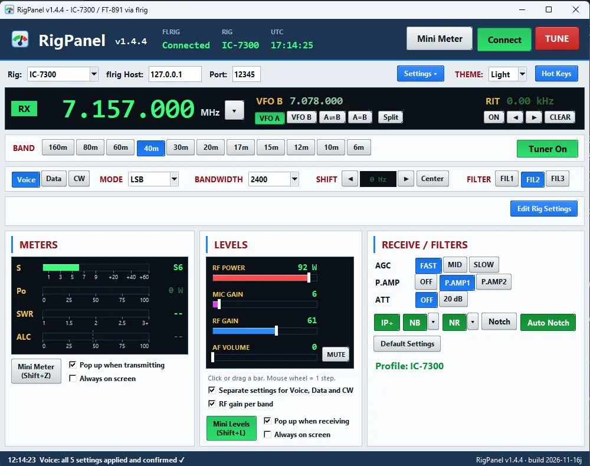

RigPanel
Control your IC-7300 or FT-891 from one screen
Windows and Linux · works through flrig
- Tune, change bands, VFO A/B, split and RIT; meters for S, power, SWR and ALC.
- Voice / Data / CW buttons set mode, width, levels and radio menus in one click.
- Default Settings puts your radio back the way you like it, and tells you what changed.
- Tap Ctrl in any program and RigPanel jumps to the front.
- Because it goes through flrig, WSJT-X, JS8Call and fldigi keep sharing the radio.
- Other radios flrig supports work for the basics; more Icom and Yaesu models can be added.
